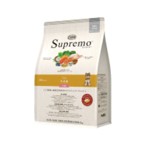
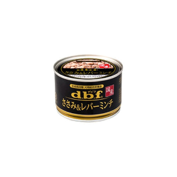
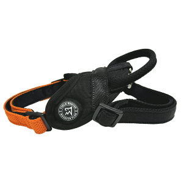
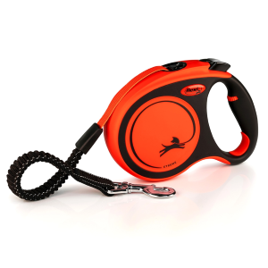

わたしのおすすめ わたしが普段愛用しているものたちを紹介します。 食べもの ドッグフード ニュートロ シュプレモ子犬用 小粒  化学合成物や香料は無使用で栄養化の高い ナチュラルフードです。小粒で食べやすく、 わたしはふやかしてから食べています。 毎日600g近くをぺろりと完食しています！ 公式サイトはこちら フードのお供 デビフ ささみ&レバーミンチ  缶詰をあけるといい香りがするので食べたくなり、キッチンで早くちょうだいと吠えて せかしています。ブリーダーさんのお家にいる頃から食べています。 公式サイトはこちら お散歩グッズ ハーネス マイスタープラス ヘッドインハーネスメッシュ  ブラックが基調に、前首のラインがオレンジ色のアクセントがかっこいいです。 しっかりめにサイズ調整をしてフィットさせています。 詳細はこちら リード フレキシ 伸縮リード エクストリーム  コードの長さが8ｍのものを使っていて、自由度は高くお散歩できます。 わたしは力が強いですが、今のところ壊れることはなく、耐えてくれています。 公式サイトはこちら